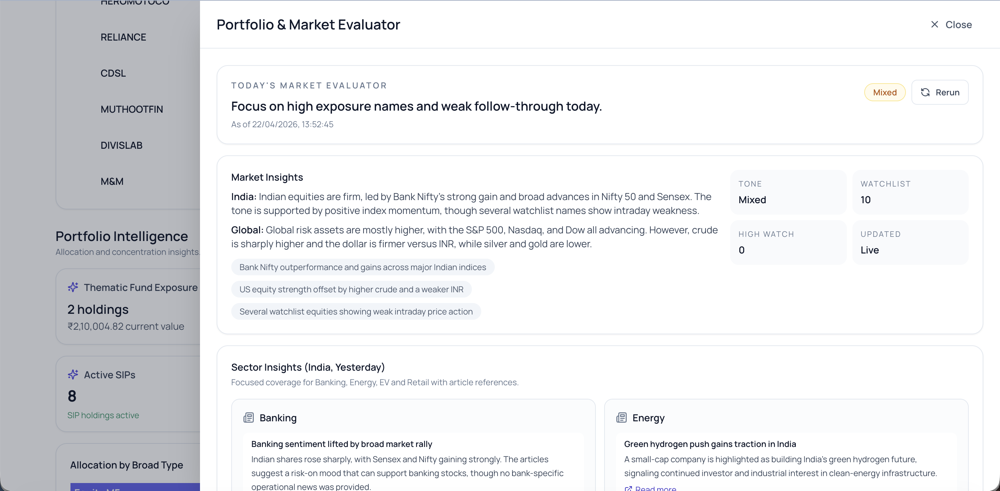
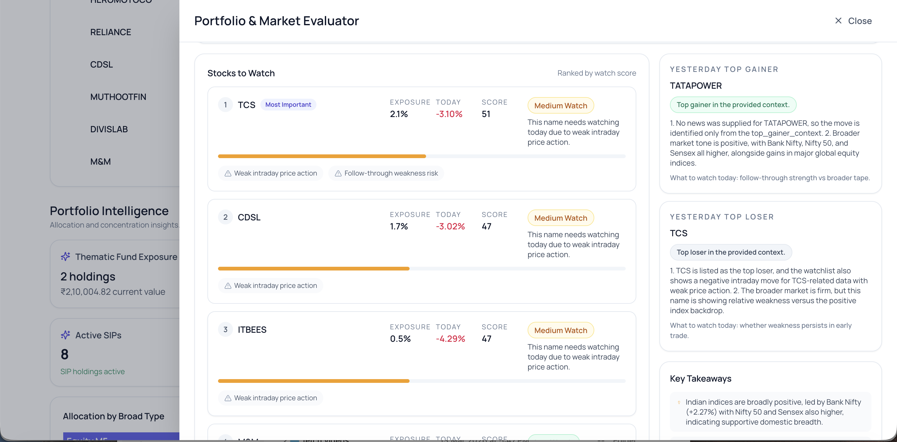

Project 04
Portfolio Market Insights
The Problem
Fragmented tools, fragmented decisions.
- Investors lack a real-time, consolidated view of portfolio risk and market context across their holdings. The pain aggravates when portfolios are spread across multiple brokers — as of 2025, there are 13.6 crore unique investors but over 240 million total trading/Demat accounts, meaning many investors hold more than one broker.
- Tracking daily movements, sector signals, and news requires switching between multiple tools, leading to fragmented insights and delayed decision-making.
- There is no simple way to translate raw market data, price movements, and news into actionable, portfolio-specific intelligence every morning.
The Solution
Daily portfolio intelligence. In seconds.
Built a Portfolio & Market Evaluator Assistant that generates daily, portfolio-specific market intelligence in seconds. It combines live market data, news signals, and portfolio exposure to identify stocks that need attention — designed as a modular AI + backend system where deterministic scoring identifies stocks needing attention before the LLM even runs.
- App's backend service consumes portfolio holdings (name, category, exposure %) and market context. Real-time price data is fetched using Upstox APIs and global signals via Yahoo Finance adapters, building a live market snapshot layer.
- A deterministic scoring system ranks portfolio holdings based on: price weakness (gap down, intraday move), exposure concentration, news risk signals, and momentum continuation.
- Separated synthesis into three independent LLM modules (multiple smaller calls to prevent mid-response truncation): Market Summary (India + global context), Top Movers (yesterday's gainer/loser insights), and Portfolio Takeaways (key investor-level insights).
- A sector intelligence pipeline for Banking, Energy, EV, and Retail: backend fetches yesterday-only India-specific news per sector; LLM generates structured sector insights from the verified input.
- Implemented Structured Outputs (JSON schema) to enforce response consistency and eliminate parsing failures.
- Introduced retry + fallback logic per module — partial failures do not break the entire evaluator.
- Optimised token usage by limiting inputs to top 5 holdings and top 2 articles per sector, constraining output length per field, and using multiple small LLM calls instead of one large response.
- Frontend designed as a premium dashboard layer: market summary hero, ranked watchlist, sector insight cards, top mover insights, and portfolio takeaways.
Value & Takeaways
What this unlocks for investors.
- Eliminates the need to track holdings across multiple brokers, apps, and news sources — single unified view of portfolio performance and market insights.
- Reduces daily portfolio analysis effort by 50–70% by consolidating market data, news, and insights into one place.
- Enables proactive risk monitoring by identifying high-exposure stocks that need attention at market open.
- Improves decision speed and clarity by translating raw price movements and news into structured, actionable insights.
- Creates a foundation for future capabilities: portfolio alerts, sector strategies, automated watchlists, and AI-driven investment recommendations.
Technical Challenges
What broke, and how it was fixed.
LLM Output Truncation & JSON Failures
Problem: Large, structured LLM responses (market + sectors + links) were getting truncated (finish_reason=length), leading to invalid JSON and fallback breakdowns.
Solution: Split the single LLM call into smaller, purpose-driven calls and introduced structured outputs with strict schemas.
💡 Reliability improves by decomposing LLM tasks, not by increasing token limits.
Unstable JSON Parsing from Free-Form Outputs
Problem: Free-form JSON prompting led to inconsistent formatting and parsing failures.
Solution: Migrated to schema-driven structured outputs, eliminating reliance on prompt-based formatting and repair logic.
💡 API-level structure enforcement is far more reliable than prompt engineering for JSON outputs.
Overloading LLM with Data + Reasoning
Problem: LLM was initially responsible for data processing, scoring, and narrative generation — increasing token usage and instability.
Solution: Shifted all computation and scoring to the backend; LLM used only for synthesis.
💡 LLMs should act as reasoning layers, not orchestration or computation engines.
Hallucinated or Inconsistent News Links
Problem: LLM occasionally generated or altered article links, reducing trust in insights.
Solution: Moved all news fetching to backend APIs and restricted LLM to summarising verified inputs only.
💡 Grounding LLM outputs with external data is critical for production reliability.
Tech Stack
What it's built with.
Architecture
System Design & Data Flow
Portfolio & Market Evaluator — System Architecture
Data ingestion → deterministic scoring → LLM synthesis → dashboard
Market Snapshot Layer
Live Context Builder
Merges Upstox price feeds + Yahoo global signals into a unified market state object per evaluation run.
FastAPI PydanticDeterministic Scoring Engine
Attention Ranker
Scores each holding on: price weakness · exposure concentration · news risk signals · momentum continuation. Outputs a ranked watchlist before LLM runs.
Python Rule-basedModule 1
Market Summary
India + global macro context. Structured JSON output. Independent call — failure doesn't block other modules.
Structured OutputModule 2
Top Movers
Yesterday's gainer/loser insights with rationale. Constrained to top 5 holdings to control token usage.
Structured OutputModule 3
Portfolio Takeaways
Investor-level insights mapped to personal holdings. Grounded on verified backend data — no hallucinated links.
Structured Output🏦 Banking
T-1 India news fetch → LLM sector summary
⚡ Energy
T-1 India news fetch → LLM sector summary
🚗 EV
T-1 India news fetch → LLM sector summary
🛒 Retail
T-1 India news fetch → LLM sector summary
Product Screenshots
Interface

